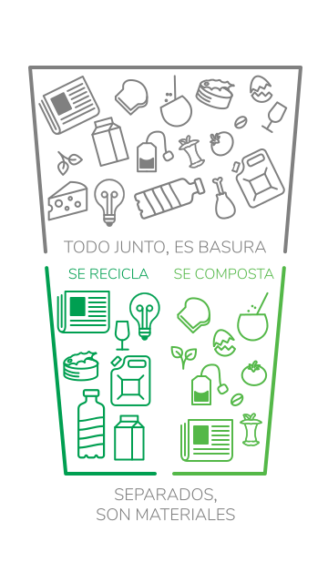

Los desechos orgánicos son el mayor problema de contaminación del mundo: en los rellenos sanitarios generan gases de efecto invernadero, e impiden aprovechar los plásticos, metales y vidrios. Cuando compostás, reciclás los orgánicos en tu casa. Es reciclar, en serio.
Sí
Restos de frutas y verduras, cáscaras de huevos, saquitos de té o café, yerba mate, toallitas de papel, papel de diario.
No
Restos de frutas y verduras, cáscaras de huevos, saquitos de té o café, yerba mate, toallitas de papel, papel de diario.
Orgánicos y secos a tu compostera cada 1 o 2 días.
Una vez por semana.
Vaciá la compostera cada 3 meses. Usá el compost para las plantas y regalá si te sobra.
5-10 minutos, cada 1 o 2 días.
Menos tiempo que sacar la bolsa de basura a la calle
Sí.
Hay composteras ideales para aprovechar pequeños espacios como un balcón o un lavadero.
El compost bien hecho huele tierra húmeda.
Si oliera mal o a podrido, es que a tu compost le falta oxigenación. Eso crea bacterias que huelen mal. Revolvé y agregale secos (hojas, viruta o cartón).
No.
En un compost sano trabajan insectos que se quedan dentro de la compostera. No tiene cucarachas, ni ratas, ni hormigas, ni moscas.
Sí.
Pero si podés, ¡usalas! Las lombrices rojas californianas aceleran la descomposición. ¿Salen de la compostera? No, se quedan